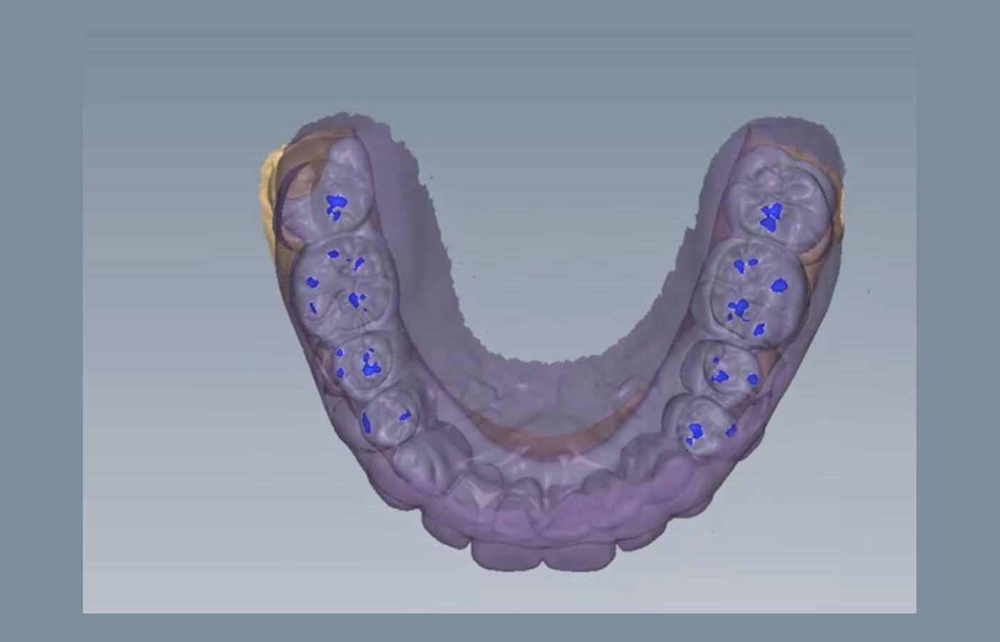

Planificación de posición mandibular guiada por la articulación para casos restauradores, ortodóncicos y full-mouth sensibles a la ATM, seleccionados por el clínico.
AxisGuide es un flujo digital por fases que utiliza medición MRI de la cantidad y dirección del desplazamiento discal, CBCT y escaneos intraorales para simular una posición mandibular propuesta. Se diseña un localizador impreso en 3D a partir del espacio interarcada en esa posición, para que el clínico pueda revisar la respuesta articular, la relación disco-cóndilo y la respuesta de síntomas antes de probar una reconstrucción oclusal provisional.
Simulación vectorial condilarSimulación de cráneo y dentición
Férulas y desprogramadores
CAD de aparatos
Para solicitudes directas de férula o aparato funcional donde la posición de mordida ya está definida por el clínico.
Salida habitual
Férulas Michigan, desprogramadores, férulas de estabilización, férulas nocturnas, rampas de mordida y archivos de producción.
AxisGuide
Planificación desde la posición articular
Para casos complejos donde la propia posición mandibular debe evaluarse antes de la reconstrucción ortodóncica o restauradora.
Salida habitual
Revisión vectorial de desplazamiento MRI, simulación de movimiento mandibular, diseño de localizador impreso en 3D, referencias de verificación, montaje oclusal provisional y referencias de reconstrucción ortodóncica o restauradora.
Lógica técnica
Pensamiento guiado por MRI, traducido a un flujo digital colaborativo.
El flujo no parte de una placa de mordida convencional. Las mediciones MRI definen el vector de desplazamiento discal, el movimiento mandibular se simula digitalmente y un localizador impreso transporta esa posición propuesta para la verificación de síntomas y MRI liderada por el clínico antes de probar una reconstrucción oclusal provisional.
01
Integración de registros
MRI, CBCT, escaneos intraorales, síntomas clínicos, fotos y objetivos de rehabilitación se alinean en un único contexto de planificación.
02
Medición vectorial MRI
La cantidad y dirección del desplazamiento discal se miden desde MRI y se traducen en un vector de planificación para la posición mandibular propuesta.
03
Simulación del movimiento mandibular
La mandíbula se simula en la posición propuesta, revisando digitalmente el espacio interarcada, referencias condilares y espacio oclusal.
04
Verificación con localizador
Se diseña un localizador impreso en 3D desde ese espacio interarcada para que el clínico pueda revisar relación disco-cóndilo, verificación MRI y síntomas.
05
Prueba oclusal provisional
Si la verificación es estable, dientes provisionales o una reconstrucción oclusal temporal pueden probar contactos MIP, oclusión dinámica, guía canina y guía anterior.
06
Reconstrucción ortodóncica o restauradora
La posición verificada puede guiar una reconstrucción oclusal ortodóncica, una reconstrucción restauradora definitiva o una secuencia combinada de tratamiento.
Detalle CAD del localizador
El espacio interarcada planificado se traduce en un portador de posición diseñado en CAD para verificación clínica, no en una férula genérica.
Registro digital de posición
La posición mandibular propuesta se documenta contra referencias craneales, escaneos intraorales y referencias condilares antes de fabricar el localizador.

Prueba oclusal provisional
El montaje provisional puede revisarse contra contactos estáticos MIP planificados antes de refinar oclusión dinámica, guía canina y guía anterior.
Casos de mejor encaje
Rehabilitación full-mouth donde la mordida inicial no es fiable
Casos ortodóncico-restauradores que requieren coordinación de posición mandibular
Dentición desgastada, cambio de VDO, mordida profunda, mordida cruzada o registros oclusales inestables
Casos ATM seleccionados por el clínico con apertura limitada, dolor articular, ruidos articulares o desviación al abrir
Asimetría facial, desviación mandibular o retrusión mandibular que requiere planificación interdisciplinar
Casos sensibles a la ATM donde el clínico desea soporte de planificación informado por imagen
Entregables de planificación
Checklist de registros y revisión de preparación del caso
Referencias de planificación del vector de desplazamiento MRI
Simulación digital de movimiento mandibular
Soporte CAD para localizador impreso en 3D
Referencias de reconstrucción oclusal provisional
Soporte de secuenciación para reconstrucción ortodóncica o restauradora
Límite clínico
El diagnóstico y las decisiones terapéuticas permanecen con el clínico
La planificación y verificación se revisan caso por caso con el equipo tratante
La relación disco-cóndilo, síntomas y hallazgos de imagen se verifican clínicamente cuando esté indicado
Articulaciones degeneradas o condiciones discales no reducibles requieren selección cuidadosa del caso
La secuenciación ortodóncica o restauradora definitiva permanece liderada por el clínico
Nota de posicionamientoAxisGuide es un servicio avanzado de planificación digital y colaboración. Apoya la revisión profesional y la planificación del tratamiento mientras el diagnóstico, la selección terapéutica y la evaluación de resultados permanecen bajo control del clínico.
Comentar un caso AxisGuideComparta MRI de ATM anonimizada, CBCT/DICOM, escaneos intraorales, registros actuales de posición mandibular y objetivo de rehabilitación para revisar el alcance antes del presupuesto.